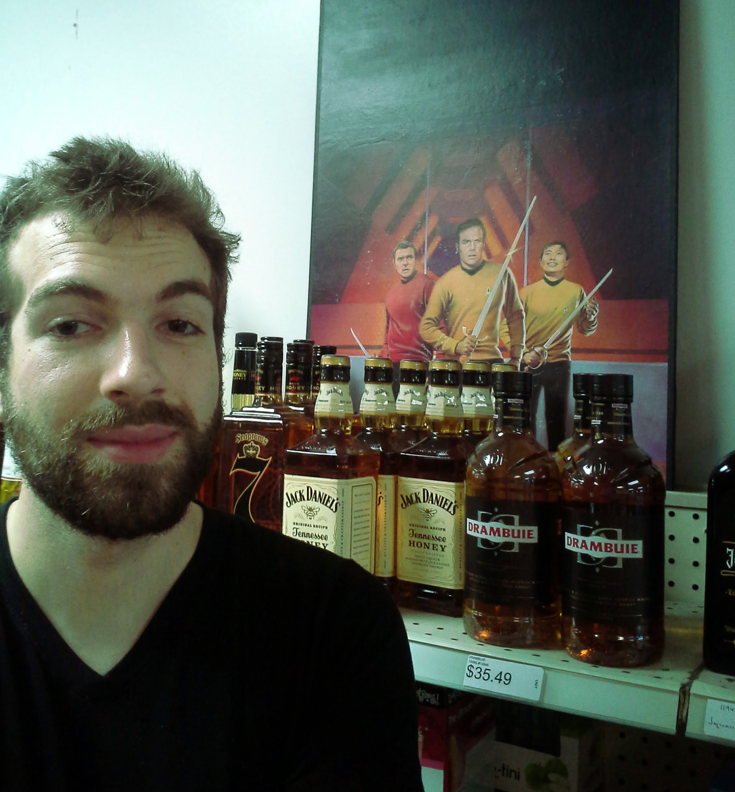

Front-End Web Development, International Project Management, Game Design
 As you may have already inferred, my name is David Earl Duncan. I'm a New Orleans-born and Tennessee-raised web developer currently living in Seattle. I enjoy freelancing but I'm also open to working full-time at a company whose core values align well with my own. I primarily work with HTML, CSS, JavaScript, jQuery, Bootstrap, and Angular, although I've also begun to dip my toes into Node.js and Unity.
In addition to coding, I have extensive experience working as a project manager for companies with offices in Russia, Ukraine, Lithuania, Poland, Transnistria, and Moldova. My primary role was mediating between different business cultures and overall politico-economic conditions to help multi-national companies succeed in new markets. Over the last five years I've lived and worked in Ukraine, Russia, and Moldova, as well as spent extended periods of time in Poland and Lithuania.
During that time I worked as a design lead for Kevaru and ArsGames, two Ukrainian game studios which create games and narrative experiences for mobile devices and the Oculus Rift. I make HTML5 games in my spare time as a hobby, but also to further develop my design skills.